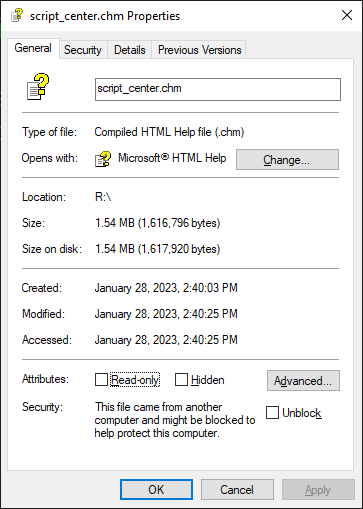

This help file contains all the scripts found in the
TechNet Script Center
(http://www.microsoft.com/technet/scriptcenter)
as of November 5, 2004.
Most of the scripts are designed to run with either Windows 2000,
Windows XP,
or Windows Server 2003,
although many will also run on Windows NT 4.0 or Windows 98;
in the latter two cases,
however,
you might need to install additional scripting technologies such as ADSI or WMI before the scripts will work.
For more information about obtaining and installing ADSI,
WMI,
and the latest version of Windows Script Host (WSH 5.6),
see the Script Center’s Scripting FAQ.
As of 2023/01/28,
this help file is available for download from
The script_center.chm file will be blocked after downloading,
thus you will have to Unblock it from the file properties dialog.
